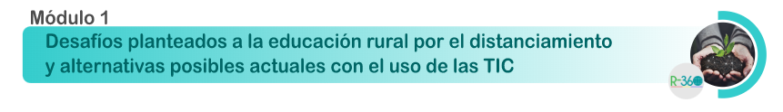

Módulo 1. Ruralidad, Distanciamiento y TIC

Bienvenidos al primer módulo del diplomado, donde analizaremos realidades del contexto rural con miras a identificar necesidades educativas susceptibles de ser abordadas con el uso de las TIC.
Las actividades propuestas en el desarrollo de dicho módulo se orientan a la construcción del siguiente resultado de aprendizaje: